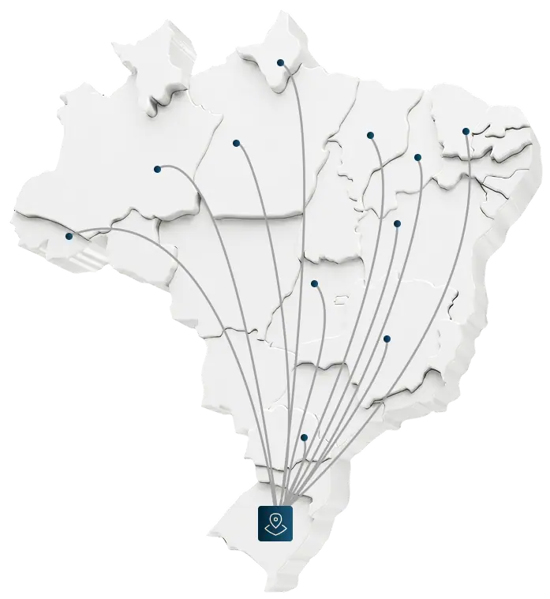
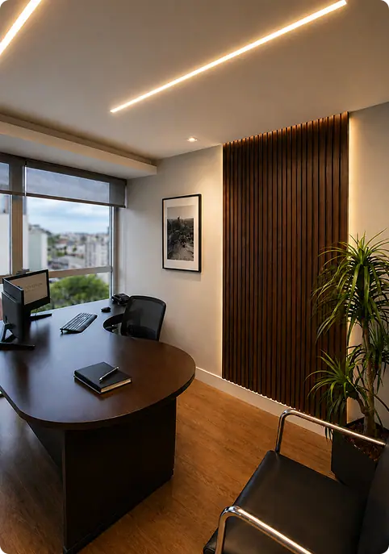
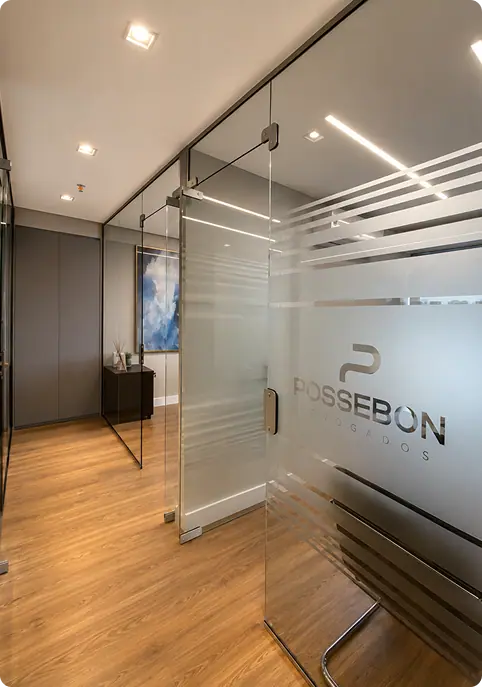
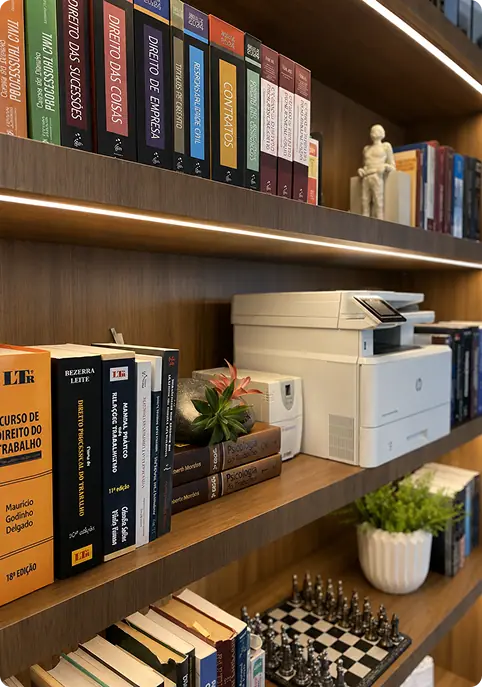
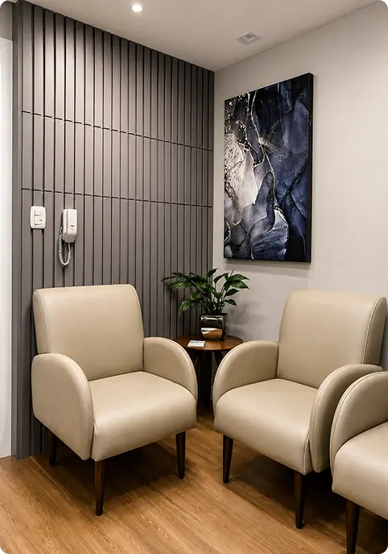
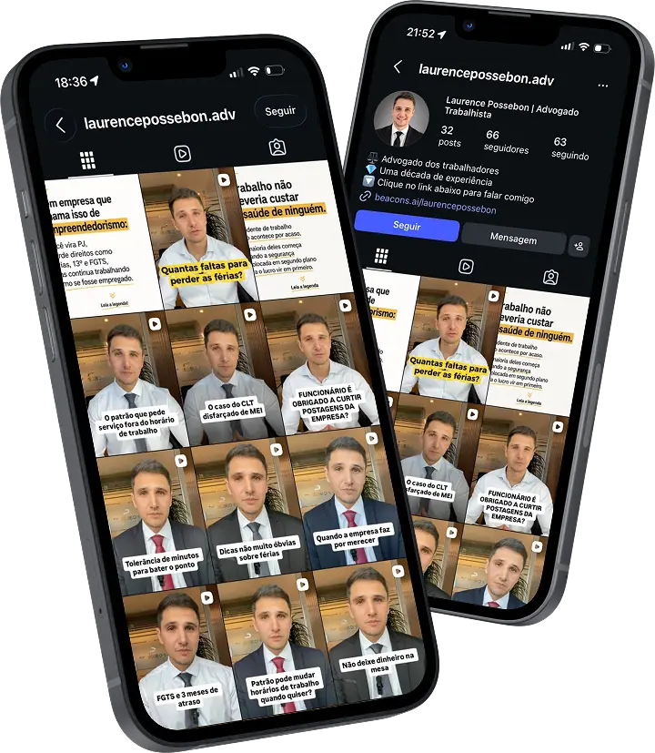

Paleta de cores
Medida no navegador: fundos ponderados pela área ocupada, textos pela quantidade de caracteres. Destaques reúnem cores saturadas e fundos de botão.
Fundos
rgb(236, 233, 226)
rgb(0, 44, 66)
rgb(1, 21, 32)
rgb(247, 242, 233)
rgb(250, 250, 252)
rgb(21, 70, 95)
Textos
rgb(255, 255, 255)
rgb(0, 49, 74)
rgb(23, 42, 36)
rgb(1, 34, 51)
rgb(110, 193, 228)
rgb(23, 38, 59)
Destaques
rgb(0, 49, 74)
rgb(23, 42, 36)
rgb(110, 193, 228)
rgb(23, 38, 59)
rgb(21, 70, 95)
Gradientes
linear-gradient(128deg, rgb(255, 255, 255) 0px, rgb(223, 217, 205) 100%)linear-gradient(210deg, rgba(226, 220, 205, 0.31) 0px, rgb(250, 250, 252) 100%)linear-gradient(rgb(255, 255, 255) 0px, rgb(253, 253, 253) 100%)linear-gradient(270deg, rgb(235, 221, 192), rgb(250, 250, 252), rgb(235, 221, 192))linear-gradient(270deg, rgb(0, 49, 74), rgb(49, 125, 163), rgb(0, 49, 74))Tipografia
Escala usada (desktop 1440px)
| Tamanho | Peso | Família | Amostra |
|---|---|---|---|
| 200px | 400 | Manrope | Texto de exemplo |
| 59px | 400 | Manrope | Texto de exemplo |
| 55px | 500 | Manrope | Texto de exemplo |
| 44px | 500 | Manrope | Texto de exemplo |
| 36px | 500 | Manrope | Texto de exemplo |
| 25px | 600 | Manrope | Texto de exemplo |
| 24px | 600 | Manrope | Texto de exemplo |
| 22px | 400 | Manrope | Texto de exemplo |
| 20px | 400 | Manrope | Texto de exemplo |
| 20px | 600 | Manrope | Texto de exemplo |
Mobile (390px): 35px/400, 27px/500, 24px/500, 22px/600, 21px/600, 20px/500, 19px/400, 19px/500 · H1 no mobile: 34px
Tags
| Tag | Família | Tamanho | Peso | Altura de linha | Espaçamento | Caixa | Cor |
|---|---|---|---|---|---|---|---|
| <h1> | Manrope | 55px | 500 | 66px | normal | none | #FFFFFF |
| <h2> | Manrope | 44px | 500 | 52.8px | normal | none | #FFFFFF |
| <h3> | Manrope | 24px | 600 | 24px | normal | none | #012233 |
| <p> | Manrope | 20px | 400 | 30px | normal | none | #00314A |
Botões
Recriados com os estilos computados reais. Efeitos de hover e animação não aparecem aqui; veja a seção de animações.
fundo #61CE7000 · texto #00314A · raio 3px · padding 13px 40px · 20px/600 uppercase · 8x na páginafundo #00000000 · texto #CC3366 · raio 0px · padding 0px 0px · 20px/400 none · 1x na páginaCards e containers
Falta de registro em carteira Regularize seu vínculo e garanta os direitos trabalhistas e
raio 10px · sombra none · borda 1px solid rgba(0, 49, 74, 0.21) · 358x376pxAtendimento direto com o advogado O Dr. Laurence acompanha seu caso do primeiro contato at
raio 8px · sombra none · borda 1px solid rgba(31, 51, 45, 0.49) · 719x174pxMais de 10 anos de advocacia
raio 8px · sombra none · borda 1px solid rgba(0, 49, 74, 0.16) · 253x169pxDIREITO TRABALHISTA A empresa não paga as horas extras. E agora? LEIA MAIS
raio 18px · sombra rgba(0, 0, 0, 0.15) 0px 0px 10px 0px · borda 1px solid rgb(206, 173, 159) · 360x595pxBordas, raios e sombras
Sombras
rgba(213, 190, 149, 0.3) 0px 20px 30px -6pxrgba(0, 0, 0, 0.15) 0px 0px 10px 0pxEspaçamentos
- Largura do conteúdo mais comum: 1140px
- Padding vertical das seções (topo/base): 0px/0px (14x), 10px/10px (1x)
- Gaps mais usados (flex/grid): 20px, 5px, 0px 10px, 10px, 60px, 20px 40px
- Altura total da página: 15460px em 15 seções
Estrutura e ritmo de cores das seções
Cada faixa é uma seção de topo, com altura proporcional e a cor ou imagem de fundo real.
Animações, ícones e bibliotecas
- Keyframes próprios: animacao-logo-completa, fadeIn, girarContinuamente, gradientAnimation, hide-scroll, mover-direita, mover-direita-mobile, shinery
- Animações de entrada do Elementor: nenhuma
- Classes de scroll reveal da casa: scroll-bottom, scroll-left, scroll-right, scroll-top
- Ícones: 84 SVG, 0 ícones de fonte
- Bibliotecas e tags detectadas: ga4, gtm, jquery, lenis, lottie, meta-pixel, swiper
Snippets da biblioteca presentes nesta página
- Nenhum snippet da biblioteca identificado.
Imagens do site





